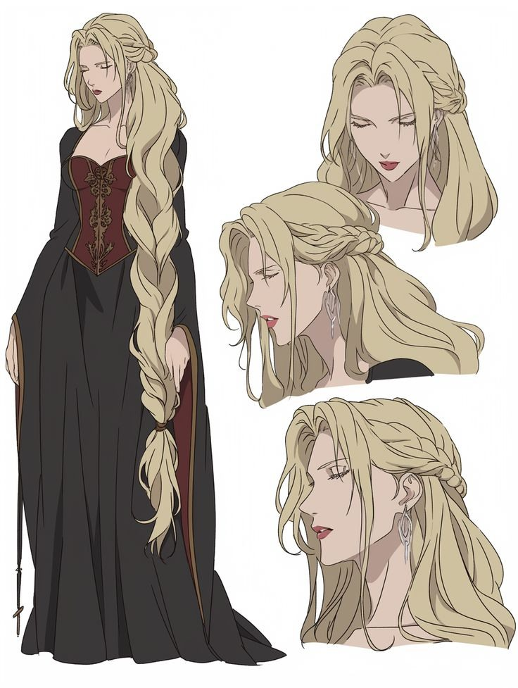

| Hisae Thornwall | the Lady of Thornwall House Thornwall of Thornhaven, a Banner House of the north; Byakuya-born as of the ratification in the Hall of Verdicts, sworn for Thornhaven and the Thornwood and the corridors |
| Epithet | the Lady in forty years in the north nobody called her anything else, or asked what name was under it; the Tenrai factors said it of a bought provincial with a weakness for gold thread, and since the Seat the north says the same two words in a very different voice |
| Concept | She smiled and paid for forty years, and the whole time she was keeping a back door open. |
| Stat line | Stage V Splintering · Expert (Faceted) Level 135 · Refined · unclassed until Glory Fate V Mastered, unread below Glory · Spirit IV Walked 35%, unread · Body Studied 20%, unread · Lenses: none named; her arts run on the Byakuya oath, a habit of the soul and a house drill · yield (η) 0.60 |
| Combat grammar | Command; she does not fight, she sends twelve hundred pikes up a stair nobody knew was there |
| Aura and sound | near-white with a deep red line under it, the Byakuya colors, banked so low for forty years that a Tenrai factor could sit across a table from her and never see them sound: dry leaves moving on a forest floor |
| How she moves | very straight and very little; she sits or stands with her small hands folded and her head so still the silver at her ears never swings, the heavy lids half down while other people talk, and when she does speak she lays the whole map out, cliff and gate and keep, before she comes to the point; her hands come apart for one thing, to draw a pale line on a map where nobody else has one; in the field she rides at a walk beside the pike block in the same gray felt as her men, where no eye stops on her, and the drum and the thorn-horn do her shouting; the knotted sword stays in its chest and she has never been seen to reach for a weapon; pressed, threatened or insulted, she smiles a little more and folds the hands again |
| Stack | sustainable Gnosis 640, Resilience 560 and Dominion 575 cap two steps on the hidden scale over the sustainable figure layers: SMILE AND PAY’s one step of Feint while she keeps the smile; THE RED BEFORE THE WHITE holding her Anchoring near the Kōkan blood; no release, no Draft, no vow but the house oath |
| Releases | none; a Fate soul’s one Release, the One, does not open before Refraction, and a woman who banked her aura under Tenrai eyes for forty years would not have gone looking for it |
| Bonded weapon | none, the knotted sword is not bonded |
| Kit | a black gown with hanging sleeves lined in oxblood, Thornwall gray felt over it in the field, silver icicles at her ears, and the piece people talk about first: the Rare red-and-gold bodice she wore across the table from Tenrai factors for forty years |
| Voice | ”No other way that the Tenrai know of.” speaker type: a Byakuya-born lady who married north to seal a peace nobody remembers, and kept her house’s oath forty years behind shut doors |
| Field | Value |
|---|---|
| Full Name | Hisae Thornwall, born of the Byakuya |
| Pronunciation | HEE-sah-eh THORN-wawl |
| Age | About seventy-six; she looks thirty-five |
| Family | The Byakuya of the white house in the Shiraki hills; cousin of Kiyome’s and Kasane’s mother married into the Thornwall line forty years ago; her husband is not named on the record |
| Realm / Faction | House Thornwall and Thornhaven, the Thornwood and the corridors; one of the six Banner Houses, sworn to Muken Moto at the ratification |
| Refusal | She will not let the oath die in the north, however long she has to keep it in the dark |
| Conviction | One day the Kōkan would come home and need a back door |
| Field | Value |
|---|---|
| Level | 135; it holds Splintering (101) and would hold Glory (115) and Refraction (130), and no Residual Strain builds in her short of 200 |
| Mastery | unread on all three roads: Mastery is not read below Glory |
| Class | Unclassed until Glory |
| Primary | Total |
|---|---|
| Vitality | 350 |
| Ardency | 250 |
| Gnosis | 640 |
| Dexterity | 300 |
| Harmonics | 350 |
| Resilience | 560 |
| Tempering | 200 |
| Dominion | 575 |
| Pool | 3,225, all spent |
| Peaks | Forecast and Anchoring; Command; Feint, which kept a smile on her face under Tenrai silver for forty years |
| Measure | Figure |
|---|---|
| EU Reserve | 141,195 EU |
| Flux Density | 15,000 EU/g |
| AU/s | 9,000 · empties in 15.69 seconds at full output |
Traits
Full accounts: Hisae Thornwall — Abilities
Below Glory her Mastery is unread, and every Trait works at its base.
| Trait | Kind | Source | Path and Form | Gates | What it does | Limit | Tell | Cost | Counter | Numbers |
|---|---|---|---|---|---|---|---|---|---|---|
| SMILE AND PAY | Primary | — | — | — | A small dry smile with everything behind it: no reading of her face or her aura gives up what she means, and her Feint reads a step high on the hidden scale for as long as she keeps it. (Primary Trait) | It is a waiting, and a waiting does nothing on its own; it needs a crow to come to Thornhaven. When the crow came and said that the red line lived, she had the Tenrai factor put in her cellar the next morning and called out the pikes, and the smile had done all it would ever do. | The tell itself tells a watcher nothing: the corners of the dark red mouth lifting a very little, the heavy lids coming half down, the small hands folding, the icicles at her ears hanging dead still. | Nothing she would mention, because nothing is made or thrown and no reserve leaves her. What it truly cost: forty years, and her own name. | Nothing the Tenrai found, and the reason is plain: they read her face for forty years and never once read her house. The smile hides what she means and cannot hide what she does. A man who counted the pike-shafts in the Thornhaven lofts, or asked the foresters why they cut the same empty rides every winter and every spring, or simply walked the Thornwood east until it ended, would have had all of it without looking at her at all; and a reader whose Perception outranks her Ward by a full step on the hidden scale, with her raised Feint counted against him, sees a banked aura for what it is. | No reserve; Feint one step high while she keeps the smile; kept forty years. |
| THE BACK DOOR | Secondary | — | — | — | She looks at ground for the way nobody uses, and she already knows where one is: the cuts through the Thornwood and the stair behind the frozen fall. (Secondary Trait) | A back door works once; after the Seat, everybody knows, and the Thornwood rides are now on every map in the north. | She looks at a map for the way nobody uses, and her finger rests where the map is blank. | Nothing. | A man who already knows where the corridors run: one sentry at the head of the stair, or one forester who talks, and twelve hundred men are strung out in single files in a wood with a cliff at the end of it. | No reserve; the corridors kept cut two hundred years; works once. |
| THE RED BEFORE THE WHITE | Inherited | — | Path Fate · Lens the Byakuya oath, the white house’s inheritance (no Wellspring) · Form Bind | none | Near the Kōkan blood her Anchoring holds and nothing frightens her | The oath’s own: it guards the king, and has nothing to say when the king is the knife. | Her lips moving over the words, with the doors shut. | Nothing to keep, and it cannot be set down. | Make the king the knife. | — |
Skills and Abilities
Full accounts: Hisae Thornwall — Abilities
Skills
| Skill | Cues / mechanics | Learned where | Priced by (Sub-Stats) | Rank |
|---|---|---|---|---|
| Reading Ground | finding the way in nobody is watching: the low place in a rock face, the ride through a wood, the hour every eye is on another road | Thornhaven, from her husband’s grandfather and the foresters’ marks | Forecast, Analysis | Apprentice |
| Command of Pike | keeping twelve hundred men in step to a drum, picking where the hedge is set, and sending them thirty at a time | forty years as the Lady; the Skeldmere and the Seat | Command, Pressure | Apprentice |
| Keeping a Face | the dry smile, the folded hands, the still head, and nothing behind any of them for a reader to take | her own table, across from Tenrai factors | Anchoring, Oath | Apprentice |
| Keeping the House Under Tax | paying what was asked for forty years and still having twelve hundred pikes, their felt, their iron and two hundred years of cut corridors at the end of it | the Thornhaven accounts, under Tenrai silver | Retention, Analysis | Apprentice |
| Gold Thread | lifting a thorn vine of gold off worn cloth and laying it on new, three times, by her own hand | the white house first, then behind the shut doors | Finesse | Initiate |
| Riding | a walk beside a pike block for two days across frozen tundra, in felt, without being looked at | the Shiraki hills and the north | Economy | Initiate |
Techniques
| Technique | Kind | Mark | Source | Path and Form | Gates | What it does | Limit | Tell | Cost | Counter | Numbers |
|---|---|---|---|---|---|---|---|---|---|---|---|
| SMILE AND PAY | Signature art | — | — | Path Spirit for the smile, Fate for the door and the Command · Lens none: a habit of the soul, a secret of the house and a house drill, no Wellspring · Form Write (the smile, one meaning written over herself); the door and the pikes are no working and take no Form | none | She smiled and paid for forty years, and the whole time she was keeping a back door open | — | — | Forty years behind shut doors and her own name with them; a waiting does nothing until the crow comes, and the door, once used, belongs to everybody. | — | Sound: a low horn, far off |
| THE THORNWALL PIKE | House Art, Signature | Mastered | Taught | — | — | Twelve hundred pikes in gray felt at a walk, in step, to a slow drum with the thorn-horn behind them, a hedge of ash and iron that horse will not go into; or thirty at a time up a stair, and over a wall nobody was watching. Her order for it is quiet and exact: “Not all at once. Thirty at a time.” (Signature, House Art of Thornwall) | The hedge: it holds ground and takes walls, and it is slow. It cannot chase, it cannot turn quickly, and a block caught strung out on the march or half formed is twelve hundred men carrying long poles. | A drum, and the thorn-horn every hundred paces. | The house its pikemen, and her nothing she would call a working; Thornwall pikes are among the ninety-one names the north paid for the Seat beside Rob Stark’s. | Horse on open ground before the hedge is set, or bolts and arrows from beyond the reach of the ash, which a slow block in felt with no plate anywhere can only walk through. | pikes: twelve hundred · the block: forty wide and thirty deep · the shafts: eighteen-foot ash · the thorn-horn: every hundred paces · up the stair: thirty at a time |
Physical Description
| Feature | Description |
|---|---|
| Build | She is tall and slender and carries herself very straight, and she looks a good twenty-five years younger than she is; the Byakuya keep their years off their faces, and the north, which knows her age, still calls her the old woman. |
| Hair | Her hair is the Byakuya gold, pale and heavy, worn loose and long with a fine braid drawn back from each temple to the crown, and the rest of it braided into one great rope that falls past her knees and is bound at the end with a cord. |
| Face and eyes | Her face is long and fine-boned and calm, her eyes the Byakuya gray under heavy lids that she keeps half shut when she listens, her mouth painted dark red. Long silver earrings hang from her ears, worked like falling icicles. |
| Dress | At Thornhaven she wears a black gown with long hanging sleeves lined in oxblood, and a fitted bodice of deep red embroidered in gold; in the field, Thornwall gray felt over it. |
Voice
| Field | Value |
|---|---|
| Speaker type | a Byakuya lady married north |
| Notices first | the way in nobody is watching |
| Sentence length | plain, exact, unhurried, the whole map laid out before the point |
| Contractions | sometimes |
| Habit | folding her small hands; the dry smile |
| Never says | her own name, for forty years; nobody asked |
| Sample line | ”Not all at once. Thirty at a time. But they’ll be inside the eastern wall before the Tenrai know there’s a hole in it.” |
Equipment
| Item | What it is | Grade | Rarity | Rung | Bonded |
|---|---|---|---|---|---|
| The Thornhaven gown | black gown with long hanging sleeves and a fitted bodice | plain | Rare | — | — |
| The icicles | long silver earrings from the white house | plain | Rare | — | — |
| Thornwall gray | heavy felt field coat over the gown | plain | Common | — | — |
| The forester’s hook | small iron cross-headed hook on a long black cord at the hip | plain | Uncommon | — | — |
| The oath lamp | small white-glazed oil lamp from the Shiraki hills | plain | Uncommon | — | — |
| The knotted sword | a short Byakuya sword in a white scabbard | C | Rare | Wallbiter | no |
| Item | Stamp | Maker’s mark | Mass and balance | Against armor | Look | How shown off | What people say | Price |
|---|---|---|---|---|---|---|---|---|
| The Thornhaven gown | — | — | — | — | no working and no stamp fine black wool falling straight to a short train, the sleeves open from the elbow and lined in oxblood that shows only when her hands move; the bodice deep red, laced up the center, with a vine of gold thread climbing it that a close look finds is thorn | she folds her small hands and lets the sleeve fall; red over black is the Kōkan’s own pattern, and she wore it at her own table under Tenrai silver every day of forty years | the factors wrote home that the Lady had a provincial taste and a weakness for gold, and a great many people have had those letters read back to them since the ratification | about thirty gold for the thread alone |
| The icicles | — | — | — | — | falling drops of twisted silver, worked by a Byakuya hand and cold to look at the shortest drop on the left has been mended with a bead of solder that does not quite match | she keeps her head still, so that they never move unless she means them to | the one Byakuya thing she was let keep in view, because no factor could see a house in a pair of earrings | — |
| Thornwall gray | — | — | — | — | the same oiled gray felt and the same cut as her pikemen’s, a single thorn-sprig in dark red thread at the collar, no iron cap and no plate anywhere | she rode down on the Skeldmere in it beside a Byakuya in near-white and glass beads, and nobody looked at her, which is what the felt is for | twelve hundred men on that ice wore a better coat than their lady, and all of them know it | — |
| The forester’s hook | — | — | — | — | the mark-hook a Thornwood forester uses to score a corridor tree, hung to the hem on a cord as thin as a lady’s key-string; her husband’s grandfather gave it to her the night he told her why the corridors were kept cut | she doesn’t, and for forty years it passed for the keys to the linen | since the Seat, every lady in the north has wanted to know where to buy one | — |
| The oath lamp | — | — | — | — | kept at Thornhaven, not carried thumb-chipped at the spout, the glaze gone the color of old teeth where the oil has run no one outside the room knew it was there; it is the least flexed thing in the north | — | — | — |
| The knotted sword | Tempered | the white house’s plain ring | about 0.9 kilograms, balanced close to the hand | beats Proofed plate, fails against Instrument plate | white lacquer gone to ivory, bound guard to scabbard-mouth in the white knot she tied the day she came north to keep a peace, the cord yellowed hard and never once cut it lies in a chest under the lamp | she has not | nobody says anything, because nobody but Kiyome has ever been told | — |
Lore
Full account: Hisae Thornwall — Lore
Ties
| Person | Who they are to her |
|---|---|
| Kiyome Byakuya | her cousin’s daughter |
| Kasane Byakuya | her cousin’s daughter, gone into the salt |
| Muken Moto | the Kōkan come home |
| Edric Ashmore | the other house that took the silver and came over |
| the Tenrai | who counted her bought |